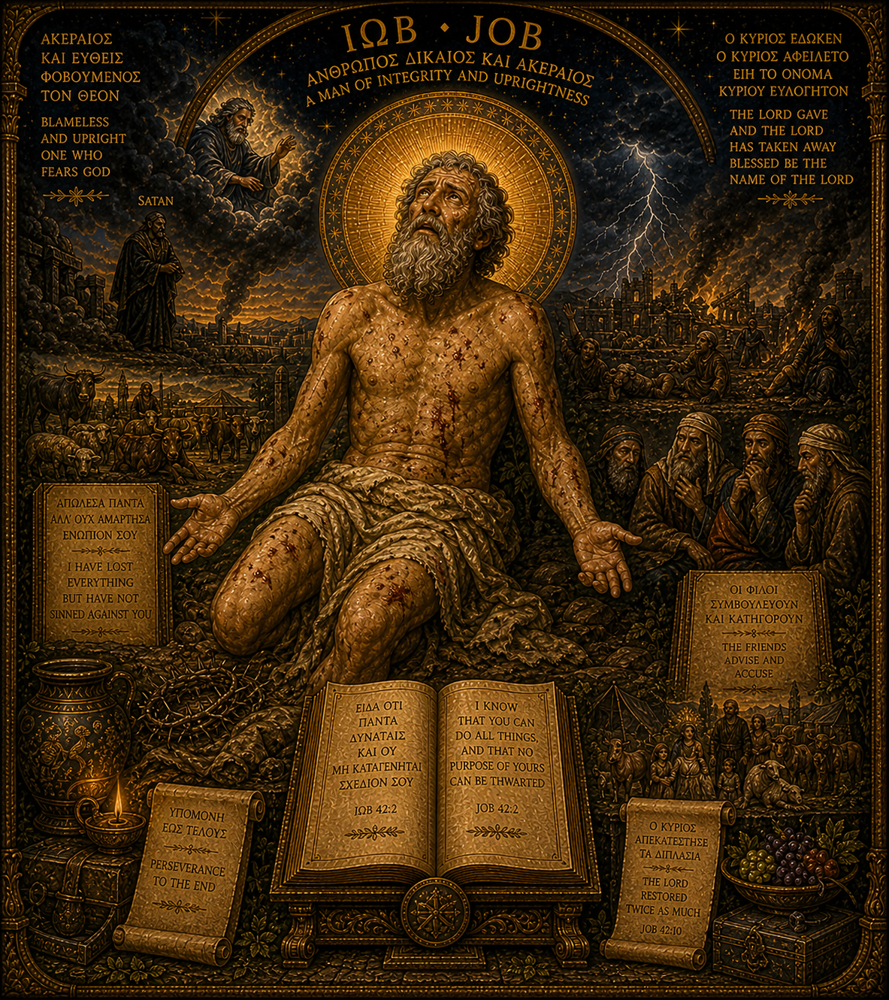

Job
The Righteous Sufferer, Wrestler with the Divine
Key Inscriptions
I know that you can do all things, and that no purpose of yours can be thwarted.
— Job 42:2
I have lost everything but have not sinned against you.
— Image inscription
The Lord gave and the Lord has taken away; blessed be the name of the Lord.
— Job 1:21
Perseverance to the end.
— Image inscription
Archetypal Function
Job is the archetype of righteous suffering — the man who endures not because he has been told to, not because he can make sense of it, but because he will not deny what is happening to him. He is the figure of integrity under pressure, the one who refuses both the false comfort of explanation and the false resolution of surrender. He demands an answer. He does not get one — he gets a presence, which turns out to be larger.
In this constellation, Job holds the wound axis alongside Chiron and the Fisher King. Where Chiron teaches from his wound and the Fisher King waits for healing from outside, Job protests. His is the suffering that will not be domesticated by theology — the voice that says, directly to the divine, this does not make sense and I will not pretend otherwise. In a constellation shaped around honest inner work, Job is the figure that validates the refusal to self-deceive.
The Shadow Forms
The shadow of Job is the complaint that becomes chronic — the suffering held so tightly that it becomes the only available identity. The righteous sufferer who cannot accept restoration when it comes because the wound has become the one thing he is sure of. The integrity that curdles into self-righteousness: I have suffered, therefore I am owed.
There is also the shadow of the friend: the one who interprets another's suffering in ways that serve the interpreter's need for cosmic order. Job's friends are his shadow — those who cannot sit with unexplained pain and so must explain it. This shadow appears within one's own psyche as the compulsion to find meaning in suffering before the suffering has spoken.
Integration
Job integrated is the figure who has passed through the whirlwind and emerged with a larger frame — not an answer, but an enlarged capacity to hold the question. His integrity is not the integrity of the untested but the integrity that has been tested and has held. He knows that cosmic justice does not operate on human timetables, and that this knowledge, far from being consolation, is the beginning of genuine depth.
For this constellation, Job provides the permission to protest — to name what is wrong without rushing to resolve it, to insist on honesty with the divine even when the divine is silent. He is the archetype that keeps the other figures honest: neither Apollo's clarity, nor Chiron's wisdom, nor Isis-Sophia's consolation is enough if it cannot stand in the presence of what Job has seen.
Symbolic Vocabulary
The Ash Heap
The place of radical reduction — where everything that could be stripped away has been stripped away. Job on the ash heap is the archetype of confrontation with the bare self, the identity that remains when all external validation has been removed.
Open Hands
The gesture of having nothing left to hold and refusing to close around the emptiness. Job's open hands are not empty in defeat but open in confrontation — demanding an answer from a God who has not explained himself.
The Whirlwind
The divine response to Job's demand: not an answer but a presence — the overwhelming reality of a cosmos that exceeds all human categories of fairness. The whirlwind does not explain; it expands the frame until the question is not silenced but transfigured.
The Friends
The shadow witnesses — those who interpret Job's suffering according to the conventional theology of deserved punishment. They represent the compulsion to make suffering meaningful by making it just, which is the deepest betrayal of the one who suffers.
Within the Constellation
Most closely related to: